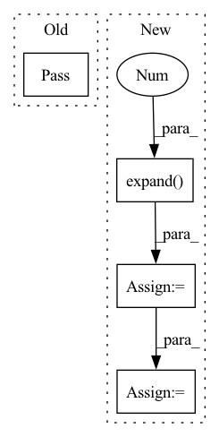

Pattern ID :34785

Before Change
video_f.release(st_video=True)
pass
After Change
depth_img = norm_ip(depth_img, 0, 1.5)
img_list.append(depth_img)
if show_weights_sum:
weights_sum = ret_imgs["weights_sum"][:, None].expand(-1, 3, -1, -1)
weights_sum = norm_ip(weights_sum, 0, 1)
img_list.append(weights_sum)
gen_imgs = torch.cat(img_list, dim=0)
In pattern: SUPERPATTERN
Frequency: 3
Non-data size: 4
Instances
Fragment ID: 99764403
Project Name: peterouzh/cips-3d
Commit Name: b4aa7359ca5484fbb5767a6cc808fca3f46e32ec
Time: 2022-02-24
Author: zhoupengcv@sjtu.edu.cn
File Name: exp/cips3d_inversion/models/st_web.py
M Class Name: STModel
N Class Name: STModel
M Method Name: sampling_yaw_web(4)
N Method Name: sampling_yaw_web(4)
M Parent Class: object
N Parent Class: object
M File Name: exp/cips3d_inversion/models/st_web.py
N File Name: exp/cips3d_inversion/models/st_web.py
M Start Line: 241
M End Line: 252
N Start Line: 192
N End Line: 279
'>
Before Change
video_f.release(st_video=True)
pass
def sampling_yaw_web(self,
cfg,
outdir,
After Change
img_list = [imgs, g_imgs_aux]
if show_depth:
depth_img = ret_imgs["depth"][:, None].expand(-1, 3, -1, -1)
depth_img = norm_ip(depth_img, 0, 1.5)
img_list.append(depth_img)
gen_imgs = torch.cat(img_list, dim=0)
'>
Fragment ID: 99764407
Project Name: peterouzh/cips-3d
Commit Name: d596a9bf9455c28ed0cbf758071f239b70a397a4
Time: 2022-02-28
Author: zhoupengcv@sjtu.edu.cn
File Name: exp/cips3d_inversion/models/st_web.py
M Class Name: STModel
N Class Name: STModel
M Method Name: interpolate_z_web(4)
N Method Name: interpolate_z_web(4)
M Parent Class: object
N Parent Class: object
M File Name: exp/cips3d_inversion/models/st_web.py
N File Name: exp/cips3d_inversion/models/st_web.py
M Start Line: 69
M End Line: 162
N Start Line: 89
N End Line: 181
'>
Before Change
def unmask(self, x):
// TODO: to be implemented
pass
class Encoder(nn.Layer):
After Change
unmasked_x: tensor of [batch, seq_len + 1, decoder_embed_dim]
batch, _, _ = x.shape
mask_tokens = self.mask_token.expand(batch, self.mask_num, -1)
// [batch, seq_len + 1, decoder_embed_dim]
unmasked_x = paddle.concat([x, mask_tokens], axis=1)
shuffled_pos_embedding = None // TODO:
'>
Fragment ID: 99764393
Project Name: br-idl/paddlevit
Commit Name: 03e9a7486fd2d655159ca521bb9059101ef3eafd
Time: 2021-11-27
Author: 479469418@qq.com
File Name: image_classification/MAE/transformer.py
M Class Name: MaskLayer
N Class Name: MaskLayer
M Method Name: unmask(2)
N Method Name: unmask(2)
M Parent Class: nn.Layer
N Parent Class: nn.Layer
M File Name: image_classification/MAE/transformer.py
N File Name: image_classification/MAE/transformer.py
M Start Line: 305
M End Line: 305
N Start Line: 365
N End Line: 369